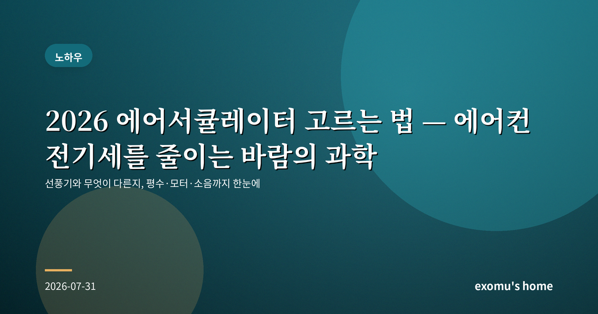
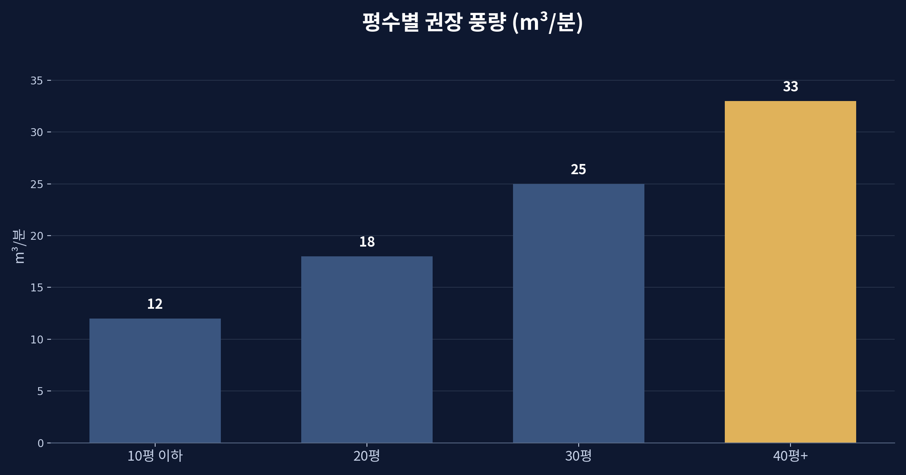
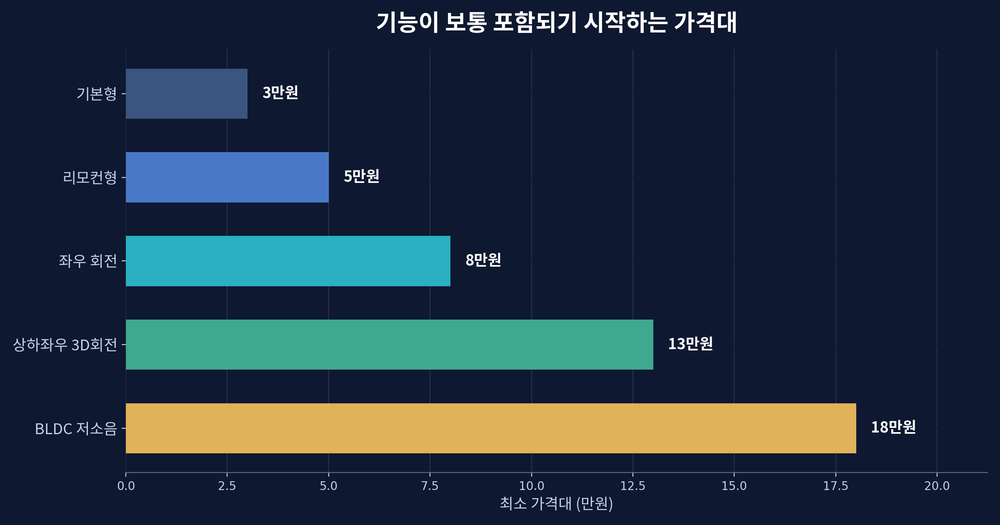
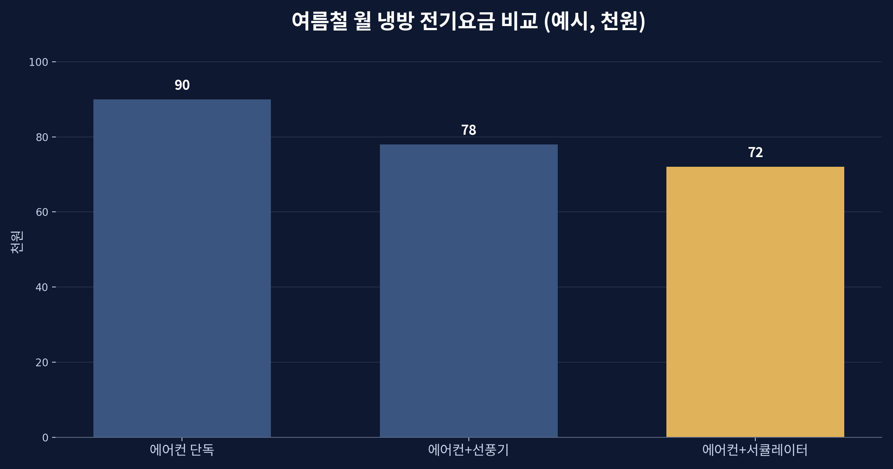
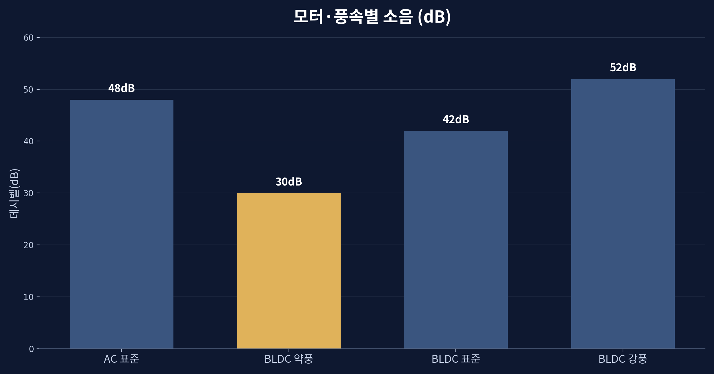

2026 에어서큘레이터 고르는 법 — 에어컨 전기세를 줄이는 바람의 과학

선풍기와 서큘레이터는 무엇이 다른가
여름이 깊어지면 에어컨 전기요금 고지서가 부담스러워진다. 이때 자주 추천되는 것이 에어서큘레이터다. 언뜻 선풍기와 비슷해 보이지만 목적이 다르다. 선풍기는 사람에게 바람을 직접 쐬어 시원함을 주는 기기이고, 서큘레이터는 실내 공기 전체를 순환시켜 온도를 고르게 만드는 기기다. 서큘레이터의 바람은 나선형으로 멀리 뻗어 나가 방 반대편 벽까지 닿고, 그 과정에서 아래에 고인 찬 공기와 위에 뜬 더운 공기를 섞는다.

왜 에어컨과 함께 써야 효율이 오르나
냉방의 가장 큰 낭비는 온도의 층이다. 찬 공기는 무거워 바닥에 깔리고 더운 공기는 천장으로 올라간다. 그래서 에어컨을 틀어도 정작 사람이 활동하는 공간은 더 늦게 시원해지고, 우리는 설정 온도를 필요 이상으로 낮추게 된다. 서큘레이터를 에어컨 맞은편이나 대각선 방향으로 돌리면 찬 공기가 방 전체로 빠르게 퍼져, 같은 시원함을 더 높은 설정 온도로 얻을 수 있다. 설정 온도를 1~2도만 올려도 냉방 전기 소비는 눈에 띄게 줄어든다.

평수에 맞는 풍량 고르기
핵심 성능은 바람이 얼마나 멀리, 강하게 나가는가다. 제품 사양에서는 이를 풍량이나 도달 거리로 표기한다. 좁은 원룸이라면 작은 모델로도 충분하지만, 거실처럼 넓은 공간이나 복층 구조라면 바람이 최소 10미터 이상 뻗는 중대형이 필요하다. 방 크기에 비해 풍량이 약하면 공기가 끝까지 순환하지 못해 효과가 반감된다. 위 그래프처럼 평수가 커질수록 권장 풍량도 가파르게 올라간다는 점을 기억하면 좋다.

모터와 소음 — BLDC가 답인 이유
오래 켜 두는 기기인 만큼 모터 방식이 중요하다. 전통적인 AC 모터는 저렴하지만 풍속 단계가 거칠고 소음이 크며 전기도 더 먹는다. 반면 BLDC(디지털) 모터는 값이 조금 비싸도 소비 전력이 낮고, 미세한 풍속 조절이 가능하며 저속에서는 도서관 수준으로 조용하다. 밤새 틀어 두거나 자는 방에서 쓸 계획이라면 BLDC 모델을 권한다. 소음에 민감하다면 약풍 소음이 30데시벨 안팎인지 사양을 확인하는 것이 좋다.

구매 전 체크리스트
정리하면 이렇다. 첫째, 사용할 공간의 평수에 맞는 풍량과 도달 거리인지 확인한다. 둘째, 상하좌우로 회전하는 3차원 회전 기능이 있으면 공기 순환 범위가 넓어진다. 셋째, 오래 쓸수록 이득인 BLDC 모터와 저소음 성능을 챙긴다. 넷째, 리모컨과 타이머, 청소를 위한 분리 편의성도 실사용 만족도를 크게 좌우한다.
서큘레이터는 그 자체로 방을 시원하게 만드는 기계가 아니다. 에어컨이 만든 찬 공기를 '잘 나르는' 보조 장치에 가깝다. 그러나 이 보조가 만드는 차이는 작지 않다. 같은 시원함을 더 적은 전기로 누리게 해 주고, 환절기에는 난방 효율을 높이는 데도 쓰인다. 여름 한 철 반짝 쓰고 마는 물건이 아니라 사계절 실내 공기를 다루는 도구로 보면, 조금 더 신중한 선택이 오래 남는다.